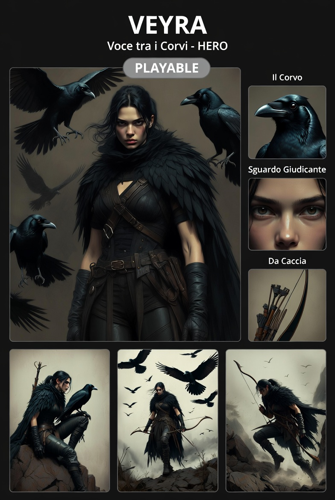

Voce tra i Corvi — HERO
Giocare con Veyra attiva è sapere quello che gli altri non sanno ancora di non sapere.
⬡ DA IMPLEMENTARE#0F0F12#4A3020#5A3A18| Zona | Hex | Anteprima |
|---|---|---|
| Pelle base | #8B6844 | |
| Ombre pelle | #6B4E30 | |
| Capelli (nero caldo) | #1A1818 | |
| Capelli highlight | #2E2828 | |
| Mantella piume — base | #0F0F12 | |
| Mantella piume — iridescenza | #1E1E2A | |
| Abbigliamento nero | #111111 | |
| Imbracatura pelle | #4A3020 | |
| Imbracatura highlight | #6A5040 | |
| Legno arco | #5A3A18 | |
| Legno frecce | #7A5528 | |
| Penne frecce | #1A1818 | |
| Corpo corvo | #0A0A10 | |
| Corvo — iridescenza | #1A2030 | |
| Occhi corvo | #222222 |
| Elemento | Descrizione |
|---|---|
| Mantella | Piume nere — funzionale, non decorativa. Mimetismo e connessione con i corvi |
| Abbigliamento | Tutto nero, da caccia, pratico — niente di cerimoniale |
| Imbracatura | Cuoio scuro, cinghie incrociate sul busto |
| Guanti | Da combattimento — lasciano libere le dita |
| Capelli | Scuri, quasi neri, tono caldo |
| Occhi | Sguardo giudicante — valuta prima di riconoscere |
| Corvi | Sempre presenti — uno o più, appollaiati o in volo. Parte della composizione visiva |
Support strategico — controllo del campo a distanza
| Funzione | Dettaglio |
|---|---|
| Attacco primario | Arco — distanza, precisione |
| Corvi attivi | Usabili come strumenti: ricognizione, distrazione, interruzione |
| Visibilità | Campo visivo ampliato tramite i corvi — vede prima degli altri |
| Posizione | Preferisce posizioni elevate e perimetro — non prima linea |
| Affiliazione | Korvo Nero dal giorno zero — con Silas e Korvan prima degli altri |